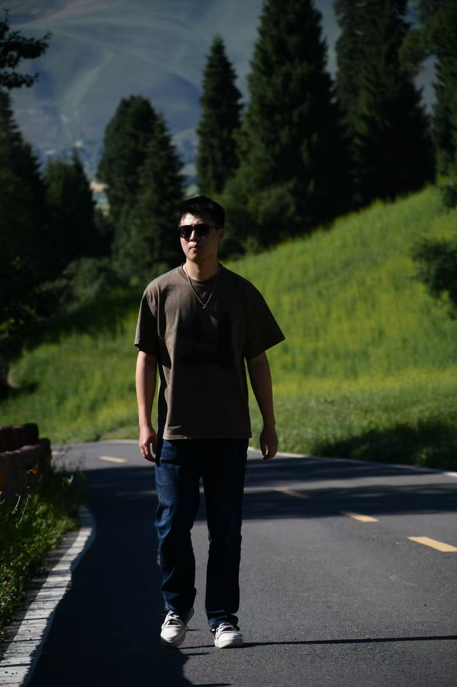
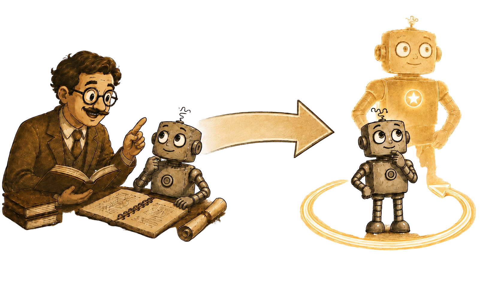

Preprint, 2026
I study the Self-X of large language models — teaching them to improve, assess, and reflect on themselves.

My work centers on the Self-X Of LLMs, especially Self-Improvement: the ability of a model to evolve on its own, continuously, without human supervision. I'm drawn to this because the traditional recipe of more data and more human supervision is starting to hit a ceiling, while today's LLM agents can already generate data, call tools, and run code on their own. So I believe the next step is for a model to drive its own progress, learning and improving by itself. Around self-improvement, I also explore related abilities such as Self-Assessment and Self-Reflection, since both are necessary conditions for achieving it.
I am also interested in RL, Post-Training, RAG, Trustworthy LLMs, and Knowledge Reasoning.

Self-X of LLMs. Researching self-improvement of large language models.
Reliability of LLMs. Developed a Reasoning-based Bias Detector (RBD) to debias LLM-as-a-judge evaluations.
LLM for Finance. Built Fin-RAG, a RAG-enhanced system with dynamic chunking and hybrid retrieval for financial QA.
Self-Improvement of LLMs. Proposed Dynamic Noise Preference Optimization (DNPO), leveraging synthetic data to enable LLM self-improvement.
LLM for Healthcare. Built an automated multi-modal pipeline for breast ultrasound report generation.
RAG in LLMs. Developed PRCA, a pluggable adapter improving retrieval-augmented QA with black-box LLMs.